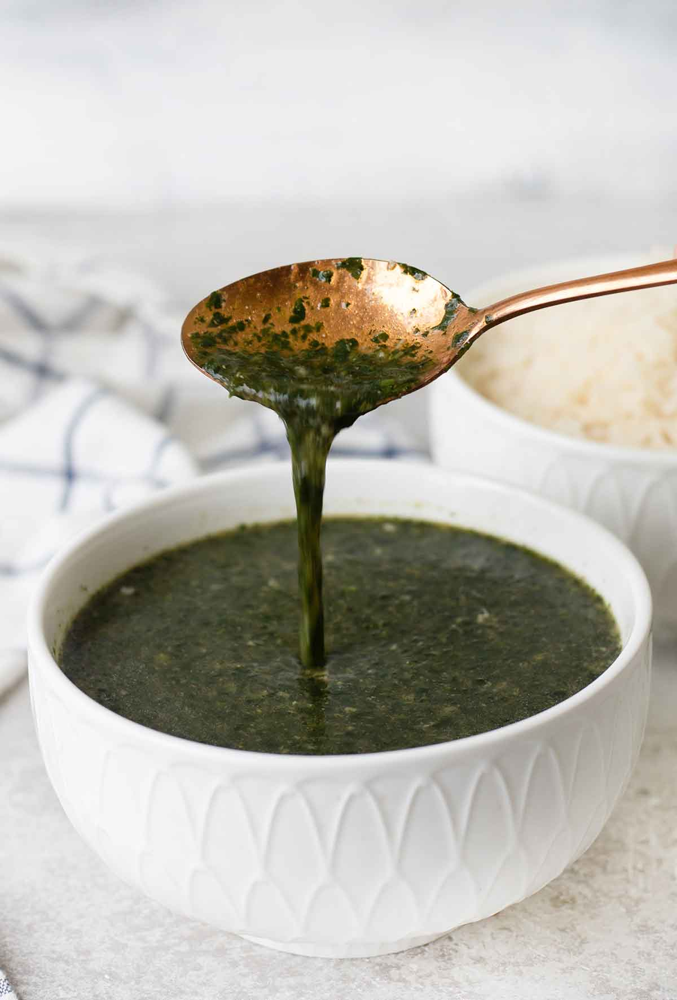

Molokhia
Cooked in a rich chicken broth and flavored with a fragrant garlic-coriander paste, molokhia soup—jute mallow soup—is an iconic Egyptian dish.

Description
Today, most people prepare the soup with frozen molokhia that comes cleaned and chopped, but my mother always used fresh, as I do today. I remember her working for hours as she patiently snipped fresh leaves, discarding the muddy stalks and rinsing off any clinging dirt under running water. Then, she’d spread the wet leaves out in one layer to air dry under the warmth of the sun.
Legend has it that a successful molokhia soup is only possible if the cook gasps at the top of their lungs when they add the tasha. It’s an Egyptian tradition that has been passed on from one generation to the next, and one I will happily pass down to my kids.
Ingredients
- Fresh or frozen molokhia leaves
- Minced garlic
- Toasted coriander seeds
- Pinch of salt
- Ghee
How to make molokhia
- cook the minced leaves in chicken broth and leave it to gently simmer until it bubbles on the edges and becomes fragrant.
- While the soup cooks, you’ll make the tasha by pounding together the minced garlic, toasted coriander seeds, and a pinch of salt, then frying it in ghee.
- when the paste becomes fragrant, crisp, and orange-hued, you’ll add it to the soup to give it additional depth of flavor.
and that is all there is to it! easy, right?
Tips for Success
- The ideal molokhia soup should be a vivid green, with a significant body that is neither too thick nor too watery.
- Toast the coriander seeds in a dry skillet on the stove top to draw out the spice’s flavorful oils.
- Use the right ratio of broth—2 1/2 cups of broth to 400 grams of frozen molokhia. Any more broth, and the leaves will sink to the bottom of the broth rather than being incorporated into it.
- Don’t cover the molokhia pot at any point as the color will lose its vibrancy.
- Don’t overcook the garlic in the ghee. Remove it from the heat once the garlic-coriander paste becomes fragrant—otherwise the soup will taste like burnt garlic.
- Simmer—but don’t boil!—the soup. Boiling can result in a lumpy soup and dull its vivid green color.
- The slippery texture of the leaves is a signature part of molokhia—but if you’d prefer a soup that’s less slimy, you can add a grated tomato. The acidity in the tomato helps to break up the slimy texture of the greens.
Go back